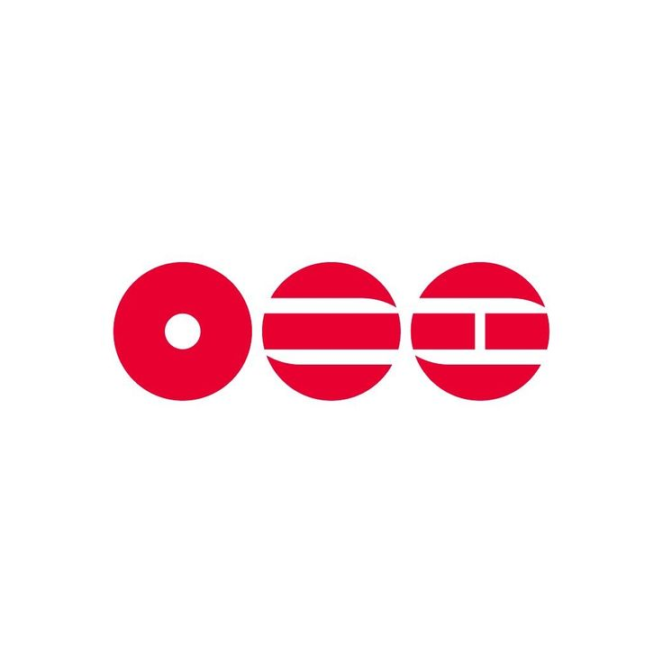

Passagem pelo Brasil
O grupo musical visitará o Brasil com shows marcados para os dias 28, 30 e 31 de outubro de 2026

BTS THE COMEBACK LIVE SHOW | ARIRANG
O primeiro show da volta do grupo aos palcos após o serviço militar foi transmitido pela Netflix e reuniu 18,4 milhões de espectadores globais ao vivo segundo dados divulgados pela plataforma de stream.